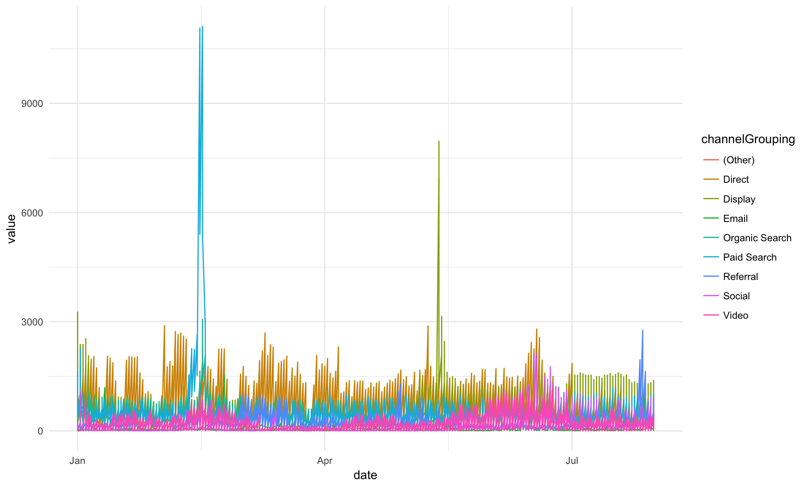
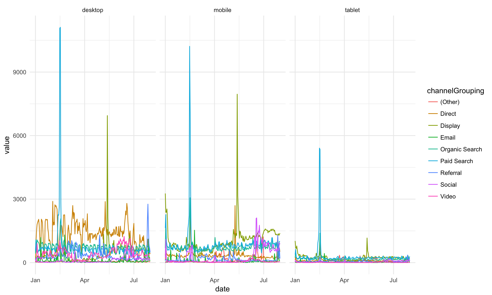
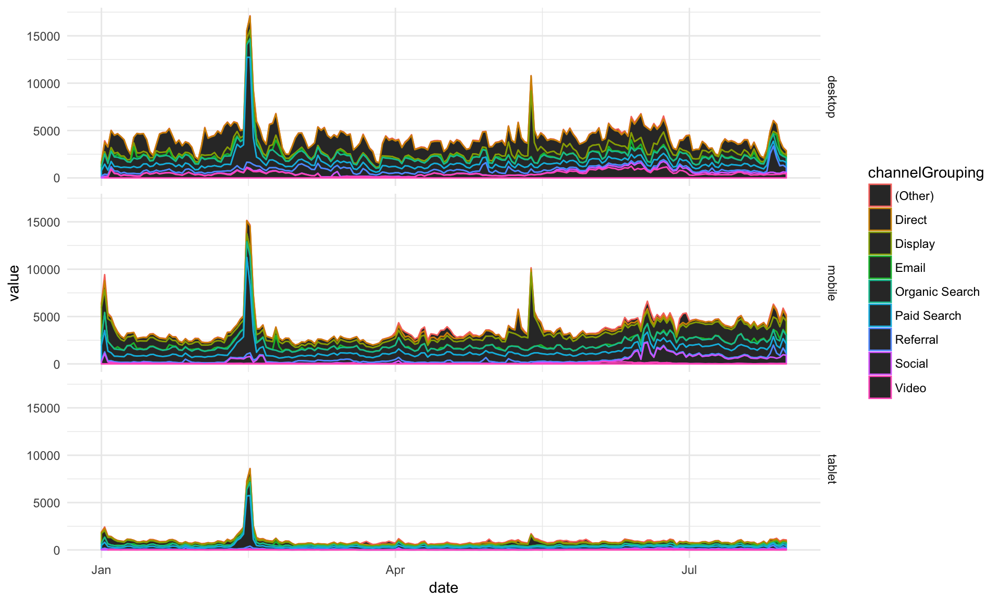
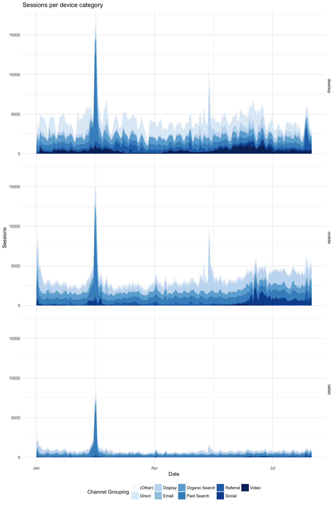
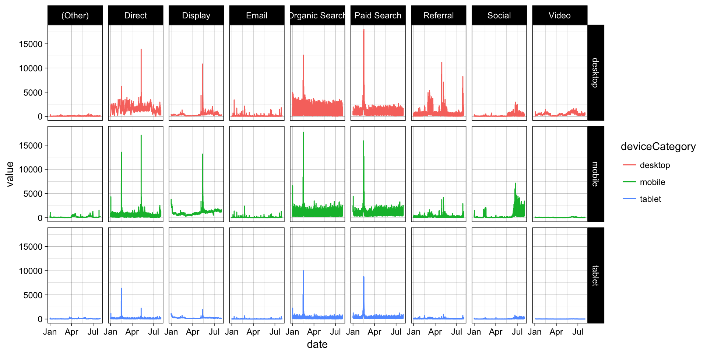
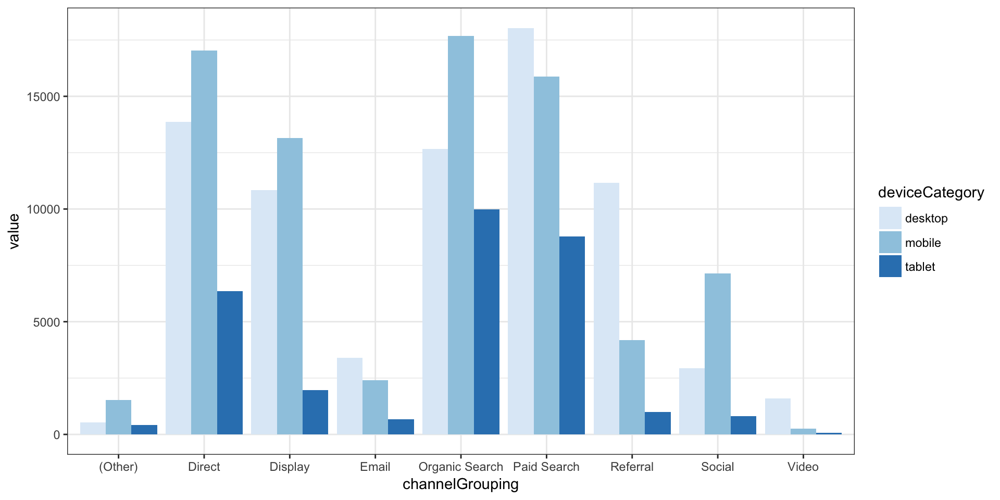

ggplot2
ggplot2 is one of the most downloaded R packages and probably the one that brought Hadley Wickham to fame.
The “grammar of graphics” philosophy it supports not only lets you create professional looking plots, but once you have mastered its syntax should encourage you to think about plots in a more structured manner.
The syntax does take time to master though, so take time to check out the ggplot2 website and the ggplot2 cookbook which will walk you through common tasks. The author still refers to these!
The Mindset for “Building” a Plot
While there are lots of ways to head down into the weeds, the core of building a ggplot is the following:
Call the
ggplot()function. Primarily, this just indicates what data set will be plotted (using thedata=parameter). And, when possible and when it makes sense, doing some light “mapping” of that data to core aspects of the plot (usingmapping = aes()). Note that you can pass the function more data than you’re actually going to plot, and you can override aspects of bothdataandmappingin subsequent steps.Add (we actually use the
+sign) one or moregeomfunctions, which lays out the type of visualization you want. The image lower on this page shows an extensive list of these. One way to think about it is to consider a chart where you want a line for one set of data and a bar for another set of data (a not-too-uncommon thing to do in Excel). This would use ageom_bar()geom and ageom_line()geom. The data set that will be plotted is already specified (in thedata=parameter ofggplot()), but we still may need to do some additional mapping within the geom. For instance, if thedata=parameter was time-series data that included users, sessions, and pageviews, themapping=aes()within thegeom_line()function would need to specify which of the metrics to plot on the y axis (e.g.,geom_line(mapping = aes(y = sessions))).Optionally (but often needed), add (again, with the plus sign) “theme” specifications. These are used to tweak the styles: how thick of a line around the plot, whether to include major and/or minor x and or y gridlines (and what color and thickness to make them), where to locate the legend (or not to have a legend at all). Typically, we can start with a predefined theme and then just tweak (override) specific elements, similar to how CSS can be loaded from external files and then overridden with styles defined more closely to the specific element being formatted on a web page.
Visually, you can think of these three steps like this:
Note: The order of steps 2 and 3 does not matter. This is, after all, addition. As a best practice, though, keeping the buildup of a visualization in this order makes logical sense: initiate the plot then define the different layers then apply styling. But, it’s not technically required to perform the latter steps in this order.
If you can lock in on this basic model, almost everything else is fairly readily Google-able. The above covers four things that we’re going to dive into a little bit deeper:
- Data source - its easiest to use a tidy data source in long format
- Geoms - geometric objects, the type of plot to produce. Line charts, bar charts, tiled plots etc.
- Aesthetics - this specifies which variables in your data will vary and be plotted. In many ways, “aesthetics” is a misnomer – you actually control the look and feel of plots using themes. So, if you want a plot that is “aesthetically pleasing,” you will spend more time adjusting the theme applied to the plot – it will have very little to do with the aesthetics (
aes()). - Themes - think of the theme like styles and CSS in HTML – they’re what you use to tweak and refine the specifics of the font, colors, spacing, and visibility of different “non-data” elements of the visualization.
There are other aspects of ggplot2 that we’re not going to get into here. To scratch the surface, though, below is a brief explanation of a few more of the components of the ggplot2 world:
- Coordinate systems - usually you’ll be in x-y, but polar and more exotic systems are possible
- Scales - How your variables map onto the coordinate system (e.g. a log scale)
- Statistics - Statistics applied to the data before plotting - most common is binning, such as for histograms, and smoothers such as trend lines
Thinking about what you want to produce via the components above will get you to your desired plot quicker.
Data Sources
Primarily, the data that you are plotting gets passed as the first argument (the data= argument) of the ggplot() function. This is just like Excel if you simply highlight a set of data and then click to generate a chart. Now, that is almost never the “final chart as you really want it displayed.” The same goes for ggplot() – when you specify the data= argument, you are really just defining the rough contours of the final plot.
There may even be data that is not in the data frame specified in this data= argument that, ultimately, you will include in your plot! That’s fine – ggplot2 is set up for that.
As already noted a couple of times, the tidier and longer you can get your data (fewer columns, more rows!), the better.
Geoms
Think of the different “geoms” as different “layers” that are added to the plot. You must have at least one geom. But, in many cases, you will have multiple geoms.
The ggplot2 cheatsheet is a great – if not particularly eye-friendly – resource that groups geoms by the type of data you have. The first page of this cheatsheet is below, and you can always get to it from RStudio by selecting Help>>Cheatsheets>>Data Visualization with ggplot2. See how quickly you can find the geom for a line chart (hint: it’s called geom_line()).

If your eye went straight to it, you are unique! (If you’re still looking, it’s in the very last column about halfway down).
Geoms, like many components of R, are just functions. They are tied to specific types of visualizations, though. In simple situations, you won’t need to pass any arguments to the specific geom function. If you’ve already defined the data= and the mapping = aes(...) arguments that you need to use for the geom in the ggplot() call, then you can just add the geom itself (e.g., + geom_line()). More often than not, though, you will need to specify which data to plot (as the data= argument for the geom), as well as, possibly, some additional aesthetic mappings that are specific to that geom (we’ll get to that very shortly!).
You may be wondering “Why would I have multiple geoms?” A few examples:
- A bar chart with a line chart on it (
geom_bar()+geom_line()) - A bar chart with each bar labeled with its value (
geom_bar()+geom_text()) - A bar chart where the bars in the top quintile are highlighted in a different color (
geom_bar()+ … anothergeom_bar())
This does not mean that, if you’re plotting a line chart with three different series (e.g., visits over time by device category) that you need three separate geoms. A single geom can plot multiple lines, but that gets us into mappings and aesthetics, which we’ll cover next!
Aesthetics
Aesthetics are defined using the aes() function, virtually always (maybe actually always) as the value for a mapping= parameter. There are three main things to know about aesthetics:
- They are only minimally about “style.” Instead, they are, truly, a mapping of which aspects of the data will be used where and for what. In simpler visualizations – like a column chart – you simply need to specify (“map”) which data to use for
xvalue (mapping = aes(x = [where the x values are])) and what to use for theyvalue (mapping = aes(x = [where the x values are], y = [where the y values are])). - They can be specified inside the
ggplot()function, inside thegeom_xxx()functions or as a combination of both of these. For instance, if your x values (e.g., “date”) are going to be the same for all of the “layers” of the plot, then you can specify it in theaes()call inside ofggplot(). But, if you have different y values for different layers, then you need to specify that aspect of the mapping asaes()calls within each individual geom. - They support inheritance. If you are familiar with CSS, then it’s useful to think of aesthetics as being similar to the “cascading” nature of styles: an aesthetic mapping (e.g.,
x=ory=) defined in theggplot()function call is available to every subsequent geom. But, if amapping = aes()argument is added within a geom, then it can override the mapping that is in theggplot()function. These are selective – just like styles are for CSS – ifxandymappings are defined insideggplot(), and then a mapping foryis included ingeom_line(), then thexmapping will persist from theggplot()definition, while theyvalue will use what is specified insidegeom_line().
Themes
Themes are just styling. That’s the key. A simple horizontal bar chart using ggplot2 with no theme applied looks like this:
Solely through the addition of themes, the chart can be transformed to look like this instead:
For a blow-by-blow explanation of the steps involved in that transformation, check out How to Build a Brain-Friendly Bar Chart in R. Note that the color of the bars is not something that is controlled by the theme. That’s actually an attribute of the geom (geom_bar in this case).
In general, themes are simultaneously: conceptually pretty straightforward, a little tricky to grasp at first, and maddening when it comes to certain specific tweaks. The critical things to understand are a bit of a chicken-and-egg:
theme()is the function used to build/modify a theme, and it has a ton of arguments (see the theme reference or?theme()for a complete list). These just take a bit of getting used to, but there is cascading/inheritance that goes on even within these arguments. For instance:lineis an argument for defining the color, width, and style of all of the lines in the visualizationaxis.linespecifies just the color, width, and style of the x- and y-axes. If this isn’t defined, then it will just use the properties forline(which, if not defined, just uses the defaults). Iflinespecifies a line color, andaxis.linedoes not explicitly override it, then the axes will be the color specified bylineaxis.line.xcontrols just the x-axis. The x-axis will first look to properties defined inaxis.line.xand use those. Any properties not defined there, but defined inaxis.line, will use theaxis.linedefinitions. Anything still not defined will use the properties defined inline. And, anything that’s still left undefined will use the defaults.
element_xxx()are a series of functions that actually define the properties of text (element_text()), lines (element_line()), borders and backgrounds for the plot and panels (element_rect()), and “don’t display this element” (element_blank()). In the example above,axis.line = element_blank()was used to turn off the axis lines, for instance. See the theme elements page or?element_text()for details on the different arguments for elements.
Got it? Now, let’s add just a few more things about themes:
There are some built-in themes with
ggplot2that can be your “starting point.” I like to usetheme_light()ortheme_bw(), but you can see the full list of these on the Complete themes page.The
ggthemespackage has a number of additional themes that can be used as is or as a starting point. This includes a (Stephen) Few theme, an (Edward) Tufte theme, a FiveThirtyEight.com theme, a WSJ theme, and more.Themes are additive! Regardless of what you use as your starting point (either of the above options…or nothing), simply adding an additional
theme()call to the build of your plot lets you selectively override aspects of the theme you started with.Because you will likely want to use the same theme in multiple visualizations, you will likely want to make your own “theme” function that you can call for any visualization (and then selectively tweak as needed in the visualization definition itself). This can actually be in a separate file (that then gets “sourced” using
source()or even in your own package!).
Bringing these points together, below is the code that was used to generate the bar chart above.
my_theme <- function(){
theme_light() +
theme(text = element_text(family = "Open Sans"),
panel.grid = element_blank(),
panel.border = element_blank(),
axis.title = element_blank(),
axis.ticks = element_blank(),
axis.text.x = element_blank(),
axis.text.y = element_text(size = 9, color = "gray10"))
}
ggplot(channel_data, aes(x = Marketing.Channel, y = Sales)) +
geom_bar(stat = "identity") +
coord_flip() +
scale_y_continuous(expand = c(0, 0)) +
my_theme() # THIS IS WHERE THE "STEP #3 - THEME" PIECE IS HAPPENINGFocus on how the theme works here – not so much on the ggplot(), geom_bar(), mysterious coord_flip() (the same geom is used for both horizontal and vertical bar charts, so we have “flip the coordinates” to make it horizontal), and scale_y_continuous() (a nuisance in ggplot – axes don’t cross at 0 by default).
The highlights:
- The
my_theme()function actually defines the theme. That way, it can be easily called/applied in multiple visualizations theme_light()is the “starting point” theme- All theme-controlled text is set to use
Open Sansas the font - A lot of the lines are turned off (“panel” and “axes”) using
element_blank() - The y-axis text gets a size and color specified (but will already be
Open Sansbecause it inherits that fromtext) - The theme is applied in the actual building of the plot by adding
+ my_theme()
I could have added additional + theme() calls to tweak what is defined in my_theme() further for this specific plot.
A Handy (Obscure) Tip on Debugging: Especially when it comes to tweaking the spacing in a plot, the debug = TRUE flag inside element_text() can be very handy. For whatever reason, it isn’t often discussed online.
For the bar chart above, there is this line defining the y-axis text:
axis.text.y = element_text(size = 9, color = "gray10")We can modify that by (temporarily) adding a debug = TRUE flag if we want to get a better understanding on the exact range of the y-axis text area:
axis.text.y = element_text(size = 9, color = "gray10", debug = TRUE)Now, when we build the plot, it looks like this:
This is similar to inspecting an element using developer tools in a browser, in that it draws a solid rectangle behind the complete text area and adds a little circle where each label is anchored (which can be useful in adjusting padding/margins).
Make sense? Let’s now walk through an actual example where we build up a full plot and then play around with it a bit!
Example Workflow
This example requires having a web_data data frame. You can either load up some sample data by completing the I/O Exercise (which is what is shown in the details below), or, if you have access to a Google Analytics account, you can use your own data by following the steps on the Google Analytics API page.
Once you have a web_data data frame to work with, the command head(web_data) should return a table that, at least structurally, looks something like this:
kable(head(web_data))| X | date | channelGrouping | deviceCategory | sessions | pageviews | entrances | bounces |
|---|---|---|---|---|---|---|---|
| 1 | 2016-01-01 | (Other) | desktop | 19 | 23 | 19 | 15 |
| 2 | 2016-01-01 | (Other) | mobile | 112 | 162 | 112 | 82 |
| 3 | 2016-01-01 | (Other) | tablet | 24 | 41 | 24 | 19 |
| 4 | 2016-01-01 | Direct | desktop | 133 | 423 | 133 | 61 |
| 5 | 2016-01-01 | Direct | mobile | 345 | 878 | 344 | 172 |
| 6 | 2016-01-01 | Direct | tablet | 126 | 237 | 126 | 77 |
Now, we can get to visualizing!
1. Get the Data Ready and Tidy
While it’s possible to use “wide” data, it’s generally easiest to always start with tidy “long” data, so you can quickly repeat what you have learned/applied before.
## We can use the newer tidyr() package the gather() function to tidy up the data
library(tidyr)
library(dplyr)
## call the key column 'variable' and the value colum 'value' and
## gather all variables apart from date, channelGrouping and deviceCategory
web_data_tidy <- web_data %>%
select(-X) %>% ## get rid of column X
gather(variable, value, -date, -channelGrouping, -deviceCategory)
head(web_data_tidy)## date channelGrouping deviceCategory variable value
## 1 2016-01-01 (Other) desktop sessions 19
## 2 2016-01-01 (Other) mobile sessions 112
## 3 2016-01-01 (Other) tablet sessions 24
## 4 2016-01-01 Direct desktop sessions 133
## 5 2016-01-01 Direct mobile sessions 345
## 6 2016-01-01 Direct tablet sessions 126gather() is the opposite of spread() - it “unpivots” data. This transforms the data from having 7 columns to having 4 without any loss of data.
Example:
web_data %>% filter(date == "2016-01-01", channelGrouping == "(Other)", deviceCategory=="desktop")## X date channelGrouping deviceCategory sessions pageviews entrances
## 1 1 2016-01-01 (Other) desktop 19 23 19
## bounces
## 1 15web_data_tidy %>% filter(date == "2016-01-01", channelGrouping == "(Other)", deviceCategory=="desktop")## date channelGrouping deviceCategory variable value
## 1 2016-01-01 (Other) desktop sessions 19
## 2 2016-01-01 (Other) desktop pageviews 23
## 3 2016-01-01 (Other) desktop entrances 19
## 4 2016-01-01 (Other) desktop bounces 152. Make Sure All of the Columns are the Right Class
In this case, we’re going to make the date column a Date object.
You could also choose to make factors out of your categories, as they let you set the order of colours in the legends a bit easier.
Note: Outside of applying statistical methods, converting columns to be factors will often come into play when you want to control the order of nominal or ordinal variables. This gets a little confusing, in that there are “unordered” factors and “ordered” factors, and you do not actually need an ordered factor to control the order in a plot (!). We’re not going to dive into this here, as that’s heading down into the weeds a bit. But, make a mental note that order can be controlled when using nonmetric variables. And it’s a quick Google search to get the specifics.
str(web_data_tidy)## 'data.frame': 22928 obs. of 5 variables:
## $ date : chr "2016-01-01" "2016-01-01" "2016-01-01" "2016-01-01" ...
## $ channelGrouping: chr "(Other)" "(Other)" "(Other)" "Direct" ...
## $ deviceCategory : chr "desktop" "mobile" "tablet" "desktop" ...
## $ variable : chr "sessions" "sessions" "sessions" "sessions" ...
## $ value : int 19 112 24 133 345 126 307 3266 1025 17 ...web_data_tidy$date <- as.Date(web_data_tidy$date)
## we will only look at sessions
library(dplyr)
plot_data <- web_data_tidy %>% filter(variable == "sessions")3. Create a Plot Object Called gg
We can use the ggplot() function to create a plot that we’re going to call gg. This call includes your data and any known aesthetics (mappings) that you want to apply to all of the plots that you will layer in. We can also go ahead and set the basic theme here. theme_minimal() is a nice, clean one to start with.
As we have made “long” tidy data, we know that our x variable will be date, but also our y variable will be in the value column, so we can set these as defaults in the aes() (aesthetics) call:
library(ggplot2)
## I don't know why, but I always call them gg, as do many other folks!
gg <- ggplot(data = plot_data, aes(x = date, y = value)) + theme_minimal()Let the Fun Begin!
Experiment with adding various elements to your gg object using +. Once you have found something you want to keep, assign it to gg and then carry on to the next feature.
Any aesthetics or statistics you haven’t specified in the global line, you will need to add in the geom you are adding. Note that because we have put the data in the first line, we don’t need to specify it again.
## Let's make some line plots
gg + geom_line()
## Hmm, too much data in there, let's colour by the channelGroupings
gg + geom_line(aes(colour = channelGrouping))
## We have desktop, mobile and tablet all in there, let's separate them out as "facets."
## We haven't discussed facets so far here, but, hopefully, it makes some sense what is
## happening. We're just defining which dimensions to use for the rows (none, in this case,
## as signified by the ".") and columns (deviceCategory in this case). Check ?facet_grid()
## for details!
gg + geom_line(aes(colour = channelGrouping)) + facet_grid(. ~ deviceCategory)
## I prefer it one over the other. See how this just swaps the row and column definitions
## in facet_grid()?
gg + geom_line(aes(colour = channelGrouping)) + facet_grid(deviceCategory ~ .)## Let's try an area plot -- just changing the geom that we're using!
gg + geom_area(aes(colour = channelGrouping, group = channelGrouping)) + facet_grid(deviceCategory ~ .)
## Ahh, area plots colour by scale 'fill' rather than scale 'colour' (see ?geom_area)
gg + geom_area(aes(fill = channelGrouping, group = channelGrouping)) + facet_grid(deviceCategory ~ .)
## Okay, let's keep that for now
gg <- gg + geom_area(aes(group = channelGrouping, fill = channelGrouping)) + facet_grid(deviceCategory ~ .)The point above is to show how modifications can be quickly added as you try out ideas.
A little more styling, and we are done with this example:
## Make the colours nicer
gg <- gg + scale_fill_brewer(palette = "Blues")
## Add a title
gg <- gg + ggtitle("Sessions per device category")
## Rename the x and y axis
gg <- gg + xlab("Date") + ylab("Sessions")
## Change the legend title
gg <- gg + guides(fill = guide_legend(title = "Channel Grouping"))
## Put the legend at the bottom
gg <- gg + theme(legend.position = "bottom")
## Print the final plot
gg
Disclaimer, I don’t think area plots are very clear but they look pretty ;)
Facets Can be Two Dimensional (Of Course!)
gg <- ggplot(data = web_data_tidy, aes(x= date, y = value)) + theme_linedraw()
gg <- gg + geom_line(aes(color = deviceCategory))
gg <- gg + facet_grid(deviceCategory ~ channelGrouping)
gg
Lets Do a Bar Plot
But call it the right name - geom_col (geom_bar is for count data)
gg <- ggplot(data = web_data_tidy) + theme_bw()
gg <- gg + scale_fill_brewer(palette = "Blues")
gg + geom_col(aes(x = channelGrouping, fill = deviceCategory, y = value), position = "dodge")